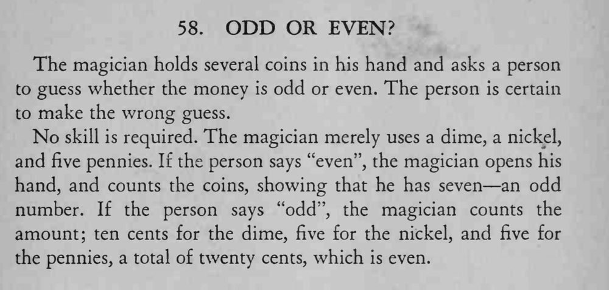

魔术师让人猜手里的钱是奇数还是偶数，无论对方猜什么，他都能证明对方猜错。
问“奇数还是偶数”时不要把“币数还是钱数”说清，等对方开口后再选对他不利的算法。

The magician holds several coins in his hand and asks a person to guess whether the money is odd or even. The person is certain to make the wrong guess. No skill is required. The magician merely uses a dime, a nickel, and five pennies. If the person says "even", the magician opens his hand, and counts the coins, showing that he has seven an odd number. If the person says "odd", the magician counts the amount; ten cents for the dime, five for the nickel, and five for the pennies, a total of twenty cents, which is even.